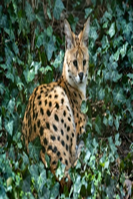
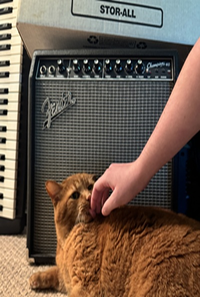

Images
The purpose of this page is to demonstrate how pictures can be manipulated, and how these manipulations can effect the way they are viewed on a webpage. This webpage gives many examples of bad image manipulation, which distorts images.
Demonstrating Image Manipulation with a Serval Photo from Pexels.com
I picked this image because my animal character for this class is a serval, and I think it looks nice with my personal photo, considering they both include cats. This image was taken by Gundula Vogel on Pexels.com. She photographs a lot of wildlife, so she must enjoy the outdoors (as do I!). This image's original format is JPG, and its original size is 7008x4672 pixels, 3.77 MB.
Downsizing Images with CSS
The image below is the original full-resolution file, displayed at less than 10% of its original width using inline CSS.
Proper Reduction of Image with Editor
Here the image has been resized to 600x400 px in Microsoft Paint before being placed on the page.
Improper Image Proportions with CSS
All four images below start from the 600x400 Paint-resized version. Two have their height squished (33% and 66% smaller than original), and two have their width squished (33% and 66%).

Improper Enlarging with CSS
Both images below are displayed at 600x400 px using CSS, but the second one was saved at only 150x100 px. This makes the smaller image appear blurry and low-quality.
Demonstrating Image Manipulation with a Guitar Amp
My image is a (3789x3746 pixels) photo of my hand petting my cat in front of a guitar amp. The amp is perfectly square. The original file format is JPEG, with a size of 2.38 MB.
Original Image in Multiple Formats
Downsizing Images with CSS
The image below is the original 3789x3746 px file, displayed at 600px wide using inline CSS.
Proper Reduction of Image with Editor
Resized in Microsoft Paint to 600x593 px, maintaining the proportions of the original.
Improper Image Proportions with CSS
All four images start from the 600x593 file. Two are squished vertically, two squished horizontally. These examples demonstrate what happens when images are incorrectly resized.

Improper Enlarging with CSS
Both images are displayed at 600x593 px with CSS. The second one was saved at only 150x148 px and displayed at 600x593 using CSS. This demonstrates how incorrect resizing can make images appear poor quality.
AI Usage
I pasted the instructions for this assignment into Claude and asked it to write me an outline. This helped me to keep track of where each image was supposed to go, and how the page should be structured overall.
Challenges
This biggest challenge for this assignment was keeping track of all of the files needed. Being careful to name them accurately was very helpful, as was having a solid outline for my document.